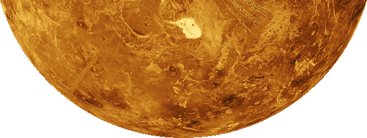
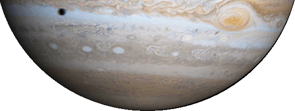
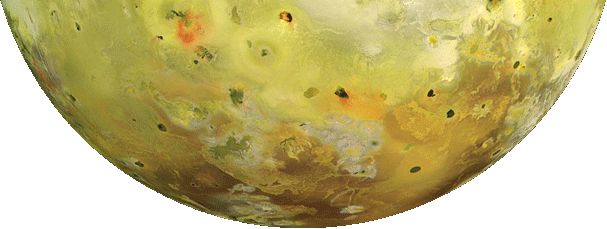
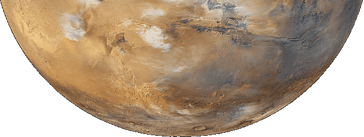
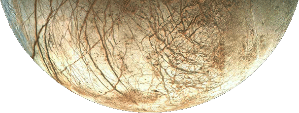

Sponsored jointly by NASA's Planetary Geology and Geophysics Program and Cornell University, SPIF is one member of the international system of Regional Planetary Image Facilities (RPIFs) which function as libraries for planetary image data and maintain ancillary and associated information about the data, including geologic maps and mission documentation. Learn more about SPIF »
-

Venus is one of the four terrestrial planets in our Solar System. In size and mass, it is very similar to the Earth. It is covered with an opaque layer of highly reflective clouds of sulfuric acid, preventing its surface from being seen from space in visible light. With Magellan's radar imaging, its restless surface was finally revealed as seen in this image.
-

Jupiter is the largest planet in our Solar System. It is composed of mostly hydrogen and helium, and sometimes referred to as one of the four Jovian planets along with Saturn, Uranus and Neptune. Its outer atmosphere is band-liked due to rapid rotation. In this image captured by Cassini, the Great Red Spot and the shadow of Jupiter's moon Europa are both clearly visible.
-

Io is the innermost of the four Galilean moons of the planet Jupiter and the fourth-largest moon in the Solar System. With over 400 active volcanoes, Io is the most geologically active object in the Solar System. Its volcanic plumes and lava flows produce large surface changes and paint the surface in various shades of yellow, red, white, black, and green, largely due to allotropes and compounds of sulfur.
-

Mars is Earth's smaller next door neighbor in our Solar System's habitable zone. It is often described as the "Red Planet" as the iron oxide prevalent on its surface gives it a reddish appearance. In this image captured by the Mars Global Surveyor, bluish-white water ice clouds can be seen hanging above the Tharsis volcanoes. Will we be living on Mars someday?
-

Europa, Jupiter's 6th closest satellite, was discovered in 1610 by Galileo Galilei. Current theories suggest that it has a thick icy crust with ocean of salt water underneath. The Galileo mission, launched in 1989, provided the bulk of current data on Europa. Although only fly-by missions have visited this satellite, the intriguing characteristics of Europa have led to several ambitious exploration proposals.